| Name | Mass (1024kg) | Diameter (km) | Density (kg/m3) | Gravity (m/s2) | Length of day (hours) | Distance from object of which they orbit (106km) | Mean Temperature (°C) | Number of Moons | Largest Moon | Notes | |||
|---|---|---|---|---|---|---|---|---|---|---|---|---|---|
| Yellow Dwarf Stars | 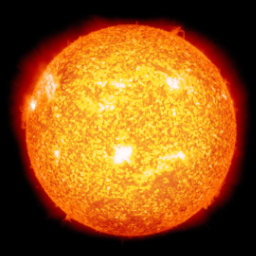 |
The Sun | 1'989'100 | 1'391'400 | 1410 | 274 | 600.0 | 264900453232.2 (The Milky Way) | 5'600 | 0 | nil | One of the few / only stars directly responsible for creating life as we know it. | |
| Terrestial Planets | 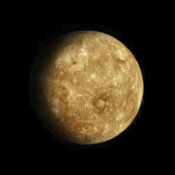 |
Mercury | 0.330 | 4'879 | 5427 | 3.7 | 4222.6 | 57.9 (The Sun) | 167 | 0 | nil | Closest to the sun and the smallest planet in our solarsystem. | |
| 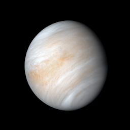 |
Venus | 4.87 | 12'104 | 5243 | 8.9 | 2802.0 | 108.2 (The Sun) | 464 | 0 | nil | It's thick atmosphere obfuscates its surface. | ||
| 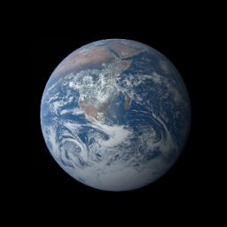 |
Earth / Terra | 5.97 | 12'756 | 5514 | 9.8 | 24.0 | 149.6 (The Sun) | 15 | 1 | The Moon | The Planet which we call our home. | ||
| 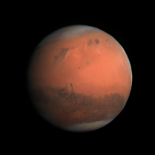 |
Mars | 0.642 | 6'792 | 3933 | 3.7 | 24.7 | 227.9 (The Sun) | -65 | 2 | Phobos | Often called the red planet. It is considered to be the most inhabitable planet in our solarsystem, however it is unlikely we will ever live there. | ||
| Jovian Planets | Gas Giants | 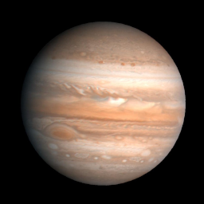 |
Jupiter | 1898 | 142'984 | 1326 | 23.1 | 9.9 | 778.6 (The Sun) | -110 | 67 | Ganymede | One of the largest planets in the solarsystem with an ill remembable amount of moons. |
| 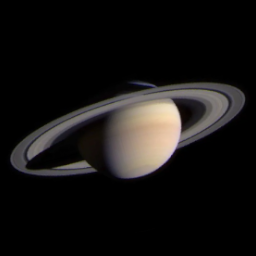 |
Saturn | 568 | 120'536 | 687 | 9.0 | 10.7 | 1433.5 (The Sun) | -140 | 62 | Titan | Known for it's elegant cluster ring. | ||
| Ice Giants | 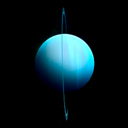 |
Uranus | 86.8 | 51'118 | 1271 | 8.7 | 17.2 | 2872.5 (The Sun) | -195 | 27 | Titania | One of the few Planets that almost completely lay on its side. | |
| 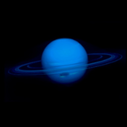 |
Neptune | 102 | 49'528 | 1638 | 11.0 | 16.1 | 4495.1 (The Sun) | -200 | 14 | Triton | Just like Saturn and Uranus, this planet has a ring. | ||
| Dwarf Planets | 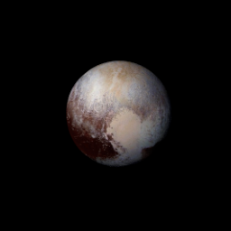 |
Pluto | 0.0146 | 2'370 | 2095 | 0.7 | 153.3 | 5906.4 (The Sun) | -225 | 5 | Charon | Declassified as a planet in 2006, but this remains controversial. It is slightly smaller than our moon.. | |
| Moons | 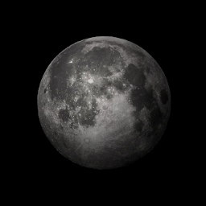 |
The Moon | 0.06 | 3'474 | 3344 | 1.6 | 708 | 0.3 (Earth) | 167 | 0 | nil | Projects gravity which is soley responsible for most of the ocean waves on earth. | |
| 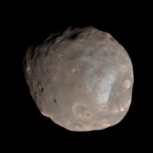 |
Phobos | 0.0000000106 | 18 - 27 | 0.00188 | 0.0057 | 7.66 | 0.06 (Mars) | -4 | 0 | nil | This moon is so small that it does not retain a spherical shape due to lacklustre gravitational forces. It's gravitational pull is so incredibly weak that throwing a rock at it could knock it out of it's orbit | ||
| 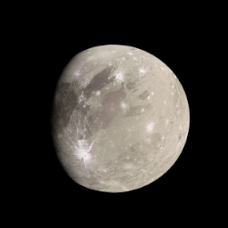 |
Ganymede | 0.14819 | 5'268.2 | 1940 | 1.4 | 168 | 1.07 (Jupiter) | -163 | 0 | nil | Similar to Jupiter, it is the largest moon in our solarsystem. | ||
| 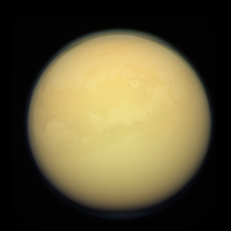 |
Titan | 0.135 | 5'149.5 | 1880 | 1.6 | 381.6 | 1.2 (Saturn) | -183 | 0 | nil | Titan surprisingly has conditions for humans to survive on it, however it's below 200 celsius temperature doesn't make it ideal. It is one of the only moons to posses a thick atmosphere. | ||
| 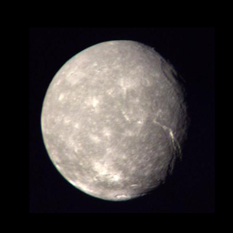 |
Titania | 0.003 | 1'576 | 4230 | 0.37 | 209.0 | 0.4 (Uranus) | -202 | 0 | nil | An unremarkable icy / rocky moon. | ||
| 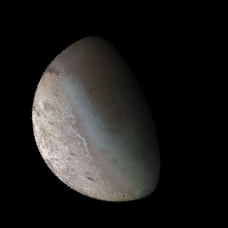 |
Triton | 0.02 | 2'707 | 2060 | 0.78 | 141.05 | 0.4 (Neptune) | -235 | 0 | nil | A dark moon with a bright frost layer. | ||
| 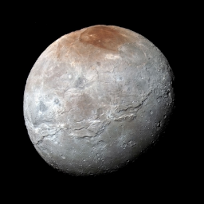 |
Charon | 0.02 | 1'212 | 1710 | 0.29 | 153.6 | 0.02 (Pluto) | −220 | 0 | nil | It is a relativily large moon, being only half the scale of Pluto, this results is that both bodies orbit a void space rather than a celestial object. | ||